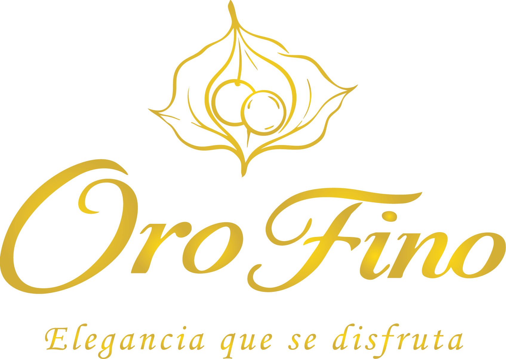
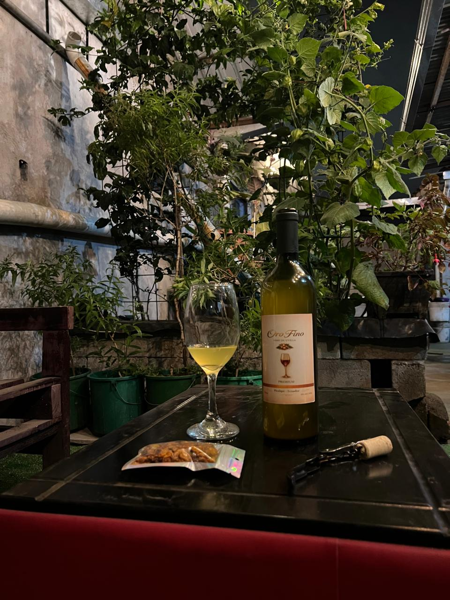
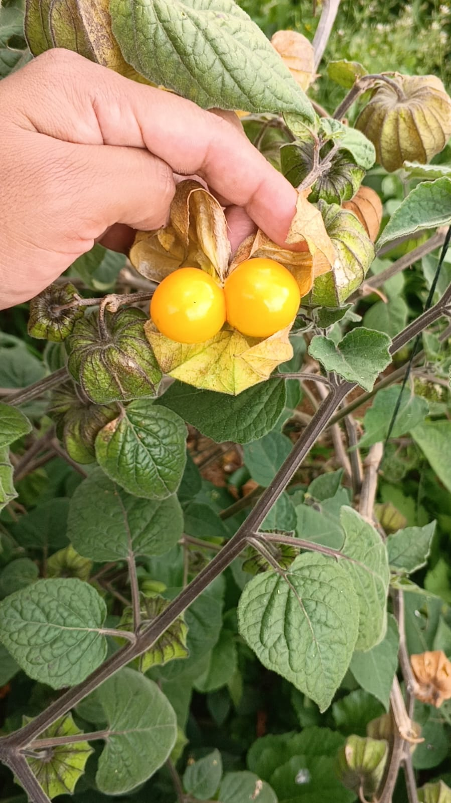

Oro Fino nace en los campos de Tabacundo como un proyecto artesanal, inspirado en la riqueza natural de la región y en la pasión por crear un vino diferente. Cada botella representa dedicación, tradición y el deseo de ofrecer un producto auténtico.
Elaborado a partir de uvilla cuidadosamente seleccionada, este vino refleja el carácter único de la tierra ecuatoriana. Su proceso artesanal conserva los sabores naturales, logrando una bebida con identidad propia.

Disfrutar Oro Fino es vivir un momento especial. Su equilibrio, aroma y suavidad lo convierten en el acompañante ideal para compartir, celebrar o simplemente disfrutar del presente.
Tabacundo, Picalquí
📱 0963644741